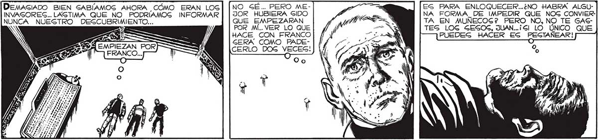

156 " Dos NN RIA Y Y PRONTO TRAJERON A DOS DE LOS HOMBRES -ROBOTS QUE FRANCO Y YO MATAMOS. ERA EVIDENTE QUE CADA HOMBRE QUE LLEVABA UN APARATO DE CONTROL EN LA NUCA TRANSFORMABA EN UN ROBOT MANEJADO DESDE LEJOS. ¡PARA COLOCARNOGLOGS A FRANCO Y A MÚ! ¡PARA HACER DE NOGOTROS OTROS DOG HOMBRES-ROBOTG ! e O INCREÍBLE MANO DEL EXTRAÑO SER RECO-, RRIO VELOZ EL TECLADO; CADA DEDO PARECIO OBRAR POR GU CUENTA, COMO Gl TUVIERA VIDA PROPIA. ..POR LAS ONDAS QUE AQUELLA MANO ALUCINANTE MANEJABA A su ANTOJO. AHORA ENTIENDO... LOG TRAJERON PARA QUE EL'"MANO” LES QUITARA LOG APARA-: TOG DE TELECONTROL.. NO EG DIFICIL AVERIGUAR PARA QUE ... A Ze / J[w o O ES PARA ENLOQUECER..¿NO HABRA ALGUNA FORMA_DE IMPEDIR QUE NOG CONVIERTA EN MUNECOS? PERO NO, NO TE GAGTES LOG SESOS, JUAN...¡SlI LO ÚNICO QUE PUEDES HACER ES PEGTAÑEAR! DEMASIADO BIEN SABÍAMOS AHORA CÓMO ERAN LOG| [NO_SÉ.. PERO MEINVASORES... LAGTIMA QUE NO PODRIAMOG INFORMAR | | JOR HUBIERA SIDO NUNCA NUESTRO DESCUBRIMIENTO... QUE EMPEZARAN NS : | POR MÍ... VER LO QUE ABE FR HACE CON FRANCO AKÁE mn SERA COMO PADEEs : CERLO DOG VECES! 0
